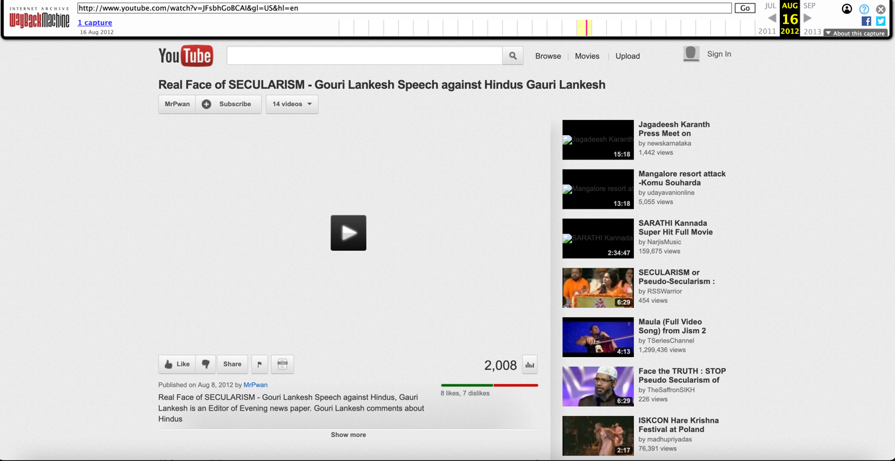

Digital Witness Lab investigated the spread of a video of a Gauri Lankesh speech on social media including YouTube, Facebook and Twitter. Our goal was to gauge the role the video played in fueling the right-wing Hindu animosity towards her that ultimately lead to her murder. This report presents the findings of our investigation that was conducted in support of Forbidden Stories investigation into her murder. Read the Forbidden Stories investigation [TK LINK].
TK INVESTIGATION SUMMARY
Background
Gauri Lankesh was murdered by gunmen outside her home on September 5, 2017. She was an outspoken journalist from Bangalore who was critical of right-wing Hindu extremism. One of the men who admitted to murdering her said he did so to save his religion.
The Special Investigations Team charged with investigating her murder learned about a YouTube video the murderers had watched that may have played a role. The video is a 5-minute excerpt of a 30-minute speech showing Lankesh being critical of Hinduism. Investigators who worked on her case described the video as “the icing on the cake” that convinced the murderers that Gauri Lankesh needed to be killed in order to save the Hindu religion
In their reporting, Forbidden Stories found that four copies of this video that had been uploaded to YouTube, two of them had been uploaded prior to her murder. The earliest of them was titled “Real Face of SECULARISM” and was uploaded on Aug 8, 2012. Thanks to the Internet Archive we know that the video had been viewed more than 250,000 times between Aug 8, 2012 and April 2019. Somewhere between 2019 and 2021 this copy of the video had been taken down. Of the remaining three videos Forbidden Stories found, one had been uploaded before her murder and is still available online.

Fig: Screenshot of the earliest Internet Archive capture of the video titled “Real Face of SECULARISM – Gauri Lankesh Speech against Hindus” with YouTube id JFsbhGoBCAI.
We sought to understand how this video spread on social media prior to her murder.
YouTube Analysis
It quickly become clear that searching for the video on YouTube using her name and the title of the video was insufficient for this task. As of this writing there was only one relevant result from that query which was uploaded after her murder, even though we have evidence of other videos on the platform with very similar titles. The first copy of the video that was found on the Internet Archive had been taken down from the platform, and the account that had uploaded it also no longer existed. We reached out to YouTube requesting information about the video and its uploaders, but it did not respond to our request. Given these circumstances, we looked for public archives of YouTube and came across the Internet Archive’s YoutTube metadata dataset from 2019.
The YouTube metadata collection is 1.1 TB dataset containing metadata on 1.4 billion YouTube videos that had been collected in February of 2019. Given that the earliest video had not been taken down till April 2019, we felt this dataset could provide some insight into spread of this video on the platform.
We searched through the data looking for:
Videos that contained her name and the terms ‘real’, ‘face’ and ‘secularism’ in that order
Videos that contained the words ‘lankesh’, ‘hindu’ and ‘hate’ in any order
Videos that were the same length as the first video or were between 300 and 328 seconds.
This search resulted in 3374 matches with 95 videos matching at least two search criteria.
After manually reviewing these results, we narrowed it down to 8 matches. 4 of these were videos that Forbidden Stories found in their reporting, 4 had not been identified by Forbidden Stories. Of the 8 videos 4 have been taken down and 6 were uploaded after her death. It is possible that there were other copies of this video that were not surfaced by our search criteria.


The oldest video from August 8, 2012 with id JFsbhGoBCAI made-up 90% of views across all eight videos. If these numbers our accurate it means that the original video had the greatest number of views and, the video did not spread very widely directly on YouTube. We know that Facebook is very popular in India and looked at that next.
Facebook Analysis
For our analysis into the spread of the “Real Face of Secularism” video on Facebook we relied on Crowd Tangle, which enabled us to see what was shared on Facebook. We looked up the eight YouTube video URLs listed above.
[I would love another list here of videos with date and number of interactions each]
Of the four videos that were taken down three of them had more than 113 million Facebook interactions, each. Like YouTube, the most popular of these was the oldest video that was uploaded on August 8, 2012, with id JFsbhGoBCAI. Posts that referenced this video had more than 30 million reactions, 6.5 million comments and 76 million shares according to the platform.
Even though the Facebook activity metrics were in the millions there were only three Facebook posts that the tool surfaced that linked to this video. This seems unusual and we do not have a good explanation for why this is the case. According to Crowd Tangle, its Facebook Activity metrics including interactions, comments and shares include aggregated data from all Facebook posts that reference the URL including both public and private posts. Our hypothesis is that Facebook has likely taken down most of the posts that shared this video, and many of the shares likely happened in private posts that Crowd Tangle does not surface.
It’s also worth noting that the interaction numbers are still increasing. We looked up the link on Crowd Tangle on Jan 12 and then again on Jan 25 and found there had been 500,000 interactions in that time. Given that there are only three public posts linking to this URL it suggests these interactions are occurring in private groups.

Fig: Screenshot of Crowd Tangle interface showing the video that was uploaded on YouTube on August 8th, 2012.
Of the three public posts that link to this video that are still surfaced by Crowd Tangle, only one of them is from before Lankesh’s murder. That video was shared by the official BJP Karnataka page and can still be viewed as of this writing. The video was posted on Oct 13, 2014 but did not have much engagement with only 11 comments, 26 shares and 30 likes.

Fig: Screenshot of the BJP Karnataka page’s post from 2014 that links to the video.
Since a vast quantity of the interactions with the video took place in private posts or public posts that have since been taken down the precise number of views this video received is hard to measure. We next looked to see what the spread looked like on Twitter.
Twitter Analysis
To understand how the “Real Face of Secularism” video was shared on Twitter we used the Twitter API to search for links to any YouTube videos, Facebook posts, and news articles that mention her or link to instances of the video on YouTube from early 2006 till the end of 2022. Unlike Facebook, the volume was low. There were around 486 tweets in that entire time period a third of which were sent before her assassination.
The video first appeared on Twitter in a Tweet by user GarudaPurana on Aug 9, 2012. The tweet links to the oldest video uploaded to YouTube with id JFsbhGoBCAI, it was sent one day after the video was uploaded. The Tweet links to a domain belonging to Facebook, indicating that the user shared the video from there.

Fig: Screenshot of the first tweet to link to the video on twitter
The GarudaPurana Twitter account belongs to Bhuvith Shetty, a known Bajrang Dal activist who was arrested in 2015 for a tweet linked to the murder of Kannada scholar M M Kalburg and later, was again arrested for his alleged involvement in the killing of Harish Poojary, a 28-year-old Hindu in November 11, 2015. In 2015 he also started a change.org petition seeking the arrest of Gauri Lankesh for hurting religious sentiments which amassed 587 signatures at the time of writing.
Along with Shetty there were other users who would periodically resurface the video, while most of the sharing was right after Lankesh’s death, there are several instances of the video being shared before her death when posts related to Lankesh went viral on social media or when she appeared in the news.

Fig: Number of tweets referencing ‘Faces of Secularism’ videos with annotations for events that triggered
| Label | Description |
|---|---|
| First reference of YT video | This is the first tweet containing a reference to the “Face of Secularism” video |
| Lankesh on @headlinestoday | Lankesh appeared on @headlinestoday and there was controversy around her appearance. |
| Newsxonline appearance | Lankesh appeared on @newsxonline and there was controversy around her appearance. |
| FB Post + Petition | Lankesh wrote a Facebook post which contained which was considered critical of hinduism. There was controversy and a subsequent change.org petition against her for it |
| DK Ravi Suicide | Lankesh wrote an article about the DK Ravi suicide. The article was generally well received however trolls still found a way to be critical of it |
| Tight Slap | Lankesh got into a Facebook argument with DP Satish, which was screenshotted and shared |
| Defamation Case | Lankesh being tried and convicted of defamation |
| Assassination | Lankesh is assassinated |
Table: Description of labels in the above graph
Before her assassination, most of the activity on Twitter related to Gauri Lankesh and the “real secularism” videos was carried out by users with low follower counts who aren’t very active on the platform. This suggests that Twitter didn’t contribute significantly to the spread of this video outside of some echo chambers.
Limitations
Incomplete Data
Our estimations for the view counts on YouTube are based on publicly available historical YouTube data. This data set contains metadata on 1.4 billion videos collected in February of 2019. While this is certainly a large data set, it is unclear what proportion of all YouTube videos at the time it represents.
However, we do know it is an incomplete dataset since two of the original four videos found by Forbidden Stories are not listed in it even though the videos were live on February 2019. In addition to the dataset itself being incomplete, our search over the dataset could have similarly been incomplete. While we found 4 additional videos using various search heuristics, there may be other videos which our query did not match. This could happen, for example, if the titles of the videos significantly changed or if the time signature of the videos were changed to add commentary.
Similarly, it is also possible that there were other copies of this video that had already been taken down before February of 2019. For these reasons the numbers we present in this report could undercount the actual number of views this video received on YouTube.
Limitation of public facing social media analysis tools
The Twitter search results that we used may have been incomplete in catching all references to Gauri Lankesh. We experimented with very targeted queries, looking specifically for content that was known to be antagonistic towards Lankesh, and very general by searching for any references to her name. However, many references to Lankesh could have been made through nicknames or pejoratives that would be difficult to untangle from unrelated conversations on the platform. In addition, we do not have any insight into tweets that have been deleted or taken down by the platform.
Crowd Tangle
We relied on Crowd Tangle to measure the views this video on Facebook. Currently this is the only way to calculate the interaction and sharing metrics of content posted to Facebook. While an incredibly useful tool, it has some limitations from the perspective of this analysis. The tool does not provide information on posts that have been removed from the platform, this means that we can’t tell how many of the interactions took place in private posts vs public posts that have been taken down.
Secondly, we do not have aggregated time series data for the interactions, this means we cannot tell what proportions of the interactions reported by Crowd Tangle took place before her death.
Thirdly, there is a lack of clarity on how these numbers are calculated. As stated in the FAQs page of the platform “As for the top Facebook Interactions section, treat it as a reasonable estimate (in most cases) that can be directionally helpful, but whose numbers we don't control and can't guarantee.” They also state that those numbers are not only from public posts but even includes shares via Messenger.
An important component missing from our investigation is how this video spread on WhatsApp. Given the popularity of the platform in India it is likely it played a significant role in the spread of this video. Given the peer-to-peer nature of the platform and lack of any publicly available tools to measure what spreads on the platform it was not possible of us to look into this retroactively.
Conclusion
Using the Internet Archive team’s YouTube Metadata Collection, we found 8 copies of the video in total and 2 copies of the video that had been uploaded to YouTube before Lankesh’s murder on August 8, 2012. That video was by far the most popular and had been viewed more than 250,000 times by April 2019.
We determined the spread of all 8 YouTube videos on Facebook using Crowd Tangle. Three of the eight videos had more than a one million interaction on Facebook, including the video from August 8, 2012. That video was also been shared by BJP Karnataka’s official Facebook Page in 2014, three years before she was murdered.
Most of the activity on Twitter related to Gauri Lankesh and the “real secularism” videos was carried out by users with low follower counts who aren’t very active on the platform. This suggests that Twitter didn’t contribute significantly to the spread of this video outside of some echo chambers. Even though the activity was low volume the data does provide some insight into the community it was shared in. The original video was shared by a known Bajrang Dal leader on August 9, 2012, just one day after it had been uploaded. That same leader was later arrested for inciting hate and was also accused of murder.